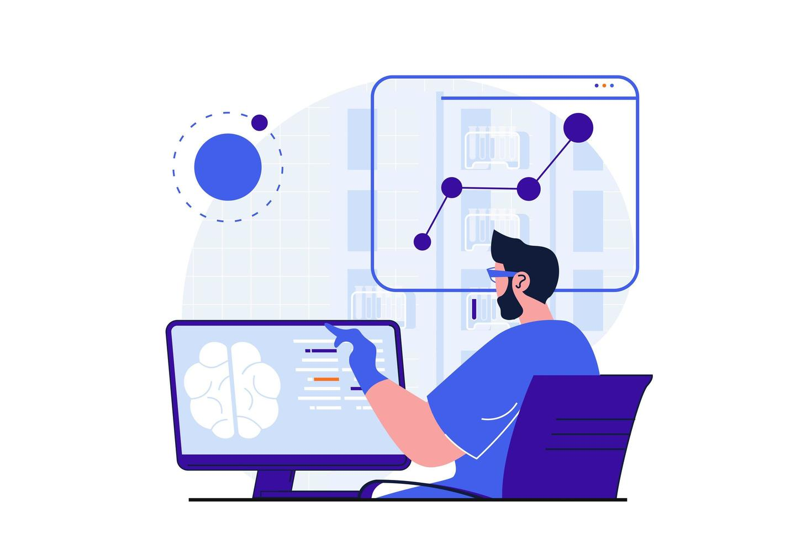

About Me
Welcome! My name is Taran Srikonda, and I am double majoring in Electrical & Computer Engineering and Computer Science, along with a concentration in AI and Machine Learning. At Duke University, I work across software engineering, real-time sensor systems, data modeling, product design, and technology policy.
Experience

Microsoft
Software Engineer Intern — Azure Silicon Cloud Hardware Infrastructure Engineering Team (SCHIE): Computer Hardware, Enterprise Software and Solutions (CHESS).
IMC Launchpad
Software Engineering Cohort (1/30 Selected Participants).
KTM Geo Lab
Earthquake Early-Warning Researcher — Built real-time sensor pipelines and supported seismic monitoring work.
Engineering Student Government
Executive Board Member — Lead community initiatives and expand student resources across Duke Engineering.
Duke Pratt School of Engineering
Engineering 101 Teaching Assistant — Support lab instruction and course development in introductory engineering.
Capital One Tech Summit
Software & Product Fellow — Built a cross-platform finance app (PennyPals) and explored product-focused engineering challenges.
Virginia Tech Mathematics Department
Mathematical Modeling Researcher — Developed ODE-based models of acute myeloid leukemia for therapy simulation.